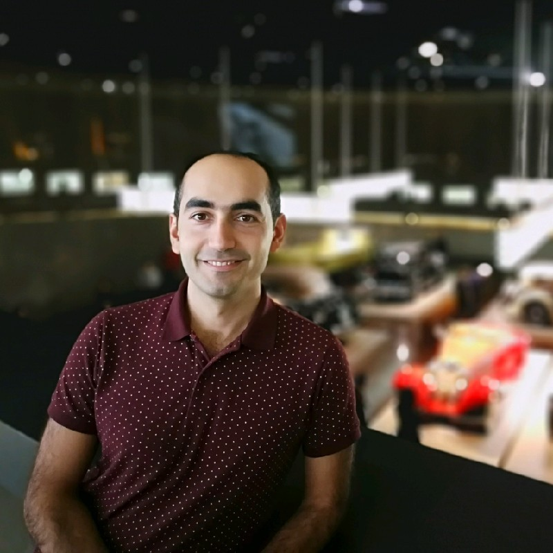

designed by UBT
Strategy Execution Unit Manager | LEAN Agile Center of Excellence
I am a person who likes to work, to learn new issues, to try to find solutions to problems, to work and develop together not only in teams but also with people in different departments. I am always working as mini-CEO of my work.
After my productive internships, I started working at MBtech. I worked in Mercedes Bus Development interior trim for window systems, floor coverage, driver window module and customer special requests. My success here also brought me the responsibility of team leadership and then assistant chief engineer.
After working at MBtech for 5 years, I became the global responsible for the monitors and display systems in Mercedes-Benz Türk Bus Development interior trim. On the other hand, I worked on cost optimization project for interior parts. After 2 years of experience, I moved to the IT-Development department and for 4 years, I was responsible for the part numbering system globally.
In all the scopes I took part in, I also took additional responsibilities to improve myself. SAP trainer role at MBtech, cost optimization project and the first European Union (H2020) project in bus development, project-to-product transformation studies in IT are some examples. After gaining experience for improving product orientation mindset in all IT at Mercedes-Benz as unit manager, I am now strategy execution unit manager and directly working with director of Mercedes-Benz Tech Türkiye.
Mercedes-Benz Otomotiv Ticaret ve Hizmetler A.S.
Working closely with Director of Mercedes-Benz Tech Türkiye, providing comprehensive administrative and strategic support.
Mercedes-Benz Otomotiv
Mercedes-Benz Otomotiv
Mercedes-Benz Türk A.Ş.
MBtech Muhendislik ve Danismanlik Ltd. Sti.
MBtech Muhendislik ve Danismanlik Ltd. Sti.
2019
Led the European Union grant program application, securing €262,500 in non-refundable support for the separation and recycling of multi-layered plastic structures. The project, with a total budget of €5.7 million, was the first EU project of MBT Bus Development and was awarded by TUBITAK. This work also became the foundation of my PhD thesis, allowing me to conduct research outside my current work scope and contribute to the company's recycling goals while working with people from different cultures and disciplines.
2020
Coordinated a comprehensive 1-year transformation process with entire team participation to develop 'value generating structures' rather than 'tasks to be completed'. Gained extensive experience in learning and transferring new methodologies to the whole team, supporting colleagues in discovering solutions to problems, applying company goals to our team, and getting efficient contributions from colleagues from different disciplines.
Istanbul University-Cerrahpasa
2016 - Present
Thesis: Examination of multi-layer structures first separating and then recycling
Istanbul Technical University
2012 - 2015 | GPA: 3.19 / 4.00
Thesis: Textile air duct design and analysis in city buses
Istanbul Technical University
2006 - 2011 | GPA: 2.60 / 4.00
Thesis: Shell and tube heat exchanger design, analysis and optimization
Hochschule Bremen, Germany
2009 - 2010 Spring semester | GPA: 3.50 / 4.00
Keytorc Software Testing Services | 2020
BA-Works | 2020
Compertus Consulting & Project Competence | 2018
Speak & More | 2018
Goethe | 2016
MCT Management Centre Turkey | 2013
Ucgen Software | 2013
PADI 1* Freediver
CMAS 1* Open Water Diver
1 Solo Exhibition
İzmir Regional Championship
'When it was mulberry tree'